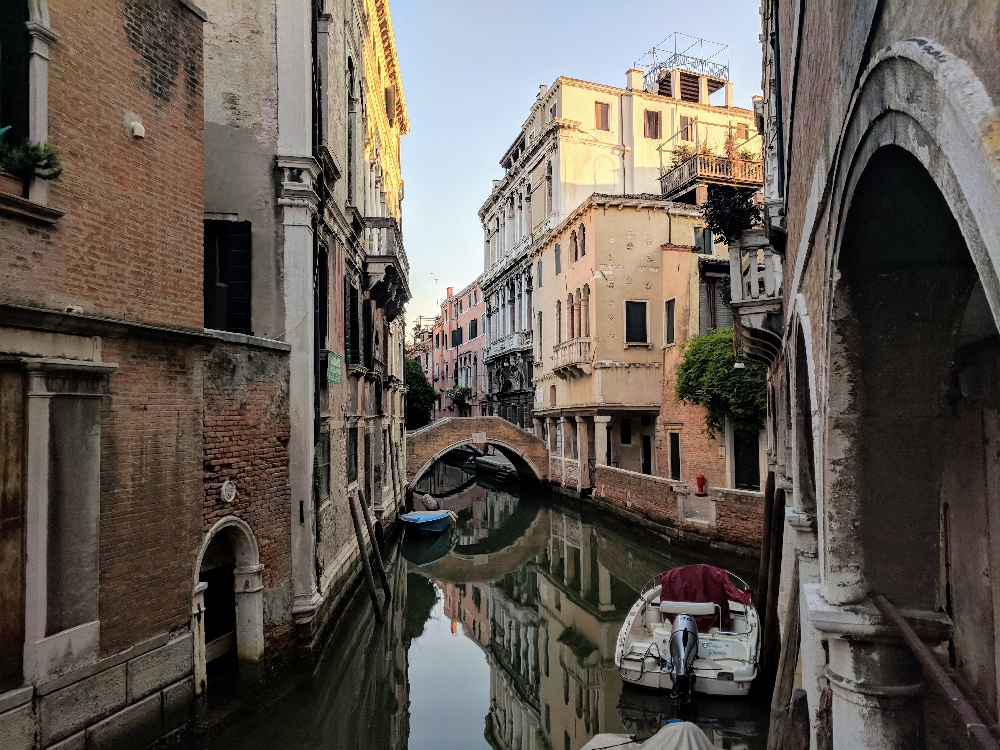
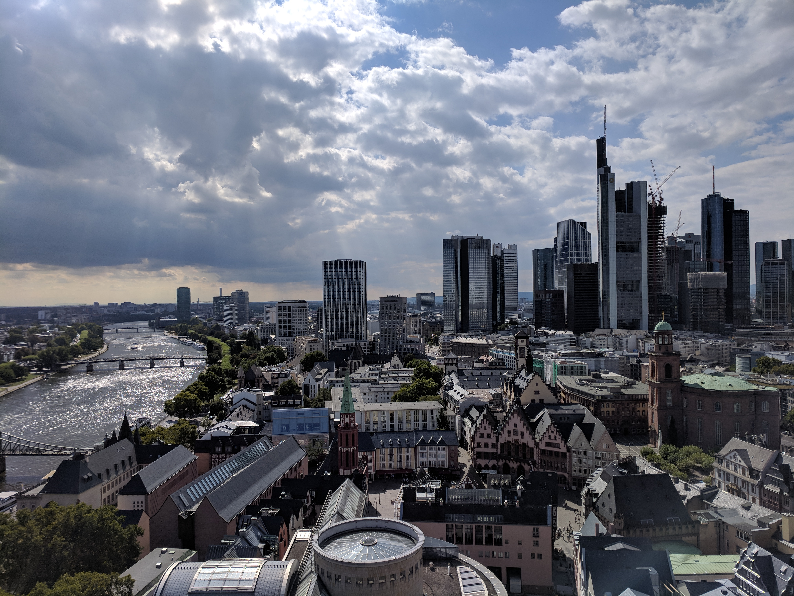
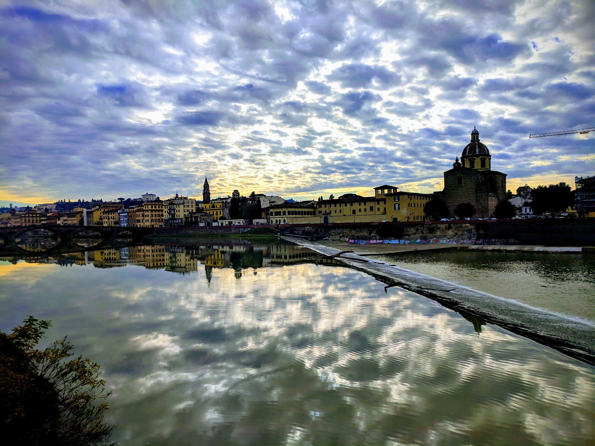
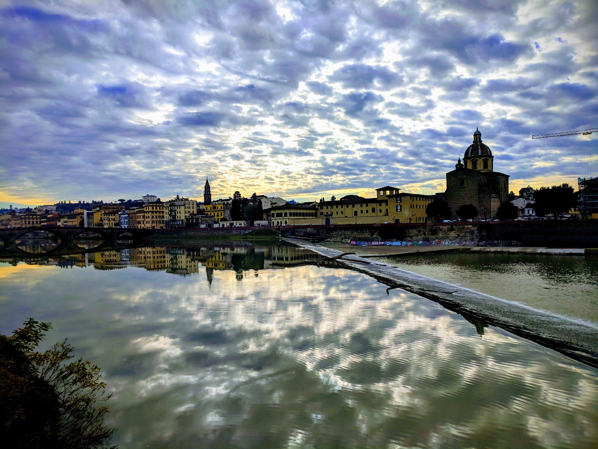
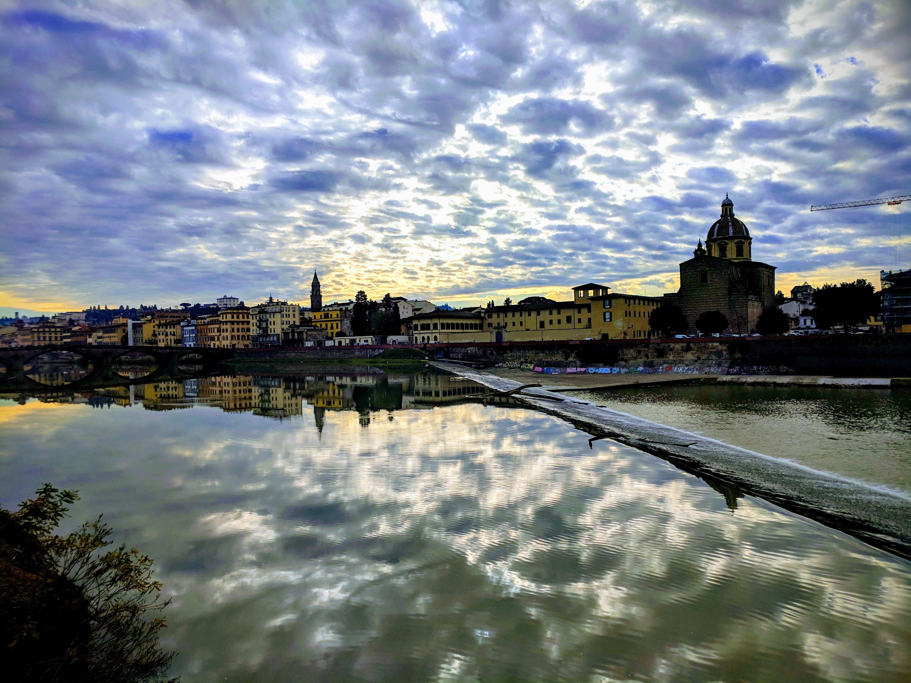

 


I am a '21 who is excited to apply to DALI Lab!
On campus, I am involved in Dartmouth Symphony Orchestra and Ultimate Frisbee, and I am a peer academic tutor.
This dev challenge has been my first foray into UI / web development.
In the past I have made some GUI-driven games in Java (I submitted two of them as my supplements).
I also have experience in MATLAB, Python, and R.
I'm excited to work with a team at DALI to develop a great product, and to learn about the software development process.
In my free time, I love to be active. I am an avid runner, traveler, and amateur smartphone photographer.
